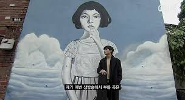
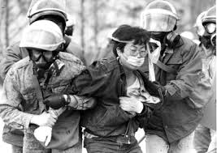

소격동-곽진언 (Cover by 한길)
소격동 노래 들어보았습니다. 어떠신가요? 이 노래는 곽진언이 슈퍼스타K에서 본선 경연 때 불렀던 곡입니다. 원곡은 서태지 노래로 EDM 기계음이 통통 튀는 음이 특징입니다. 하지만 곽진언은 이 노래를 통기타와 첼로, 피아노로 편곡을 했었죠. 노래를 들으면 저는 어린 시절에 살던 고향 시골 마을이 떠오르더라구요. 순수했던 그 시절 말이죠. 그런 감성을 담아 노래를 부른 것 같습니다. 하지만 소격동이란 노래가 '순수했던 과거를 그리워하는 마음'이라고 하기에는 뭔가 아쉽습니다. 왜 아쉬운지 원곡인 서태지의 소격동의 가사를 음미해보겠습니다.
서태지-소격동 中
어느 날 갑자기 그 많던 냇물이 말라갔죠
내 어린 마음도 그 시냇물처럼 그렇게 말랐겠죠
너의 모든걸 두 눈에 담고 있었죠
소소한 하루가 넉넉했던 날
그러던 어느 날 세상이 뒤집혔죠 다들 꼭 잡아요
잠깐 사이에 사라지죠
서태지는 본인이 살았던 소격동을 떠올리며 곡을 만들었다고 이야기했습니다.
하지만 가사에서는 '그러던 어느 날 세상이 뒤집혔죠 다들 꼭 잡아요 잠깐 사이에 사라지죠'
라는 구절이 있습니다. 고향을 떠올리는 데 갑자기 세상이 왜 뒤집혔던 것일까요?
서태지는 JTBC 뉴스룸 인터뷰를 통해 이렇게 이야기 하였습니다.
"그때 소격동은 아름다웠지만 국가에서 운동한다는 학생들을 군대로 끌고 가는 게 있었다, 그리고 나는 나의 추억을 말하려면 그 이야기가 빠질 수 없었다" 5공화국 시절 강제징집과 녹화사업은 전두환 전 대통령을 비롯한 당시 정권의 치밀한 계획 아래 이뤄졌다. 사진은 1980년대 시위 도중 한 대학생이 연행되는 모습.
소격동은 단순히 어린 시절의 회상을 넘어서 그 시절의 권위적인 군사정권을 비판하는 메세지를
담고 있는 거죠. 하지만 인위적으로 담아낸듯한 느낌은 없어요. 서태지의 말처럼 자신의 과거를 회상하기
위해서는 그 이야기가 빠질 수는 없다는 거죠. 요즘 사람들은 정치이야기를 싫어해요
계속 싸우기만 하고, 나아지는 게 없어보이기 때문에 신물이난거죠. 그래서 정치를 외면하기도해요
하지만 이 노래를 들으면서 저는 결국 삶에서 정치는 빠질 수 없는거라고 생각을해요.
소격동은 저에게 중요한 가르침을 주었어요. 이렇듯
"음악은 '나 너 사랑해' '너가 좋아' 이러한 사랑고백 같은 자기 표현을 넘어서
메세지를 줄 수 있다는 것을 알수있죠.'